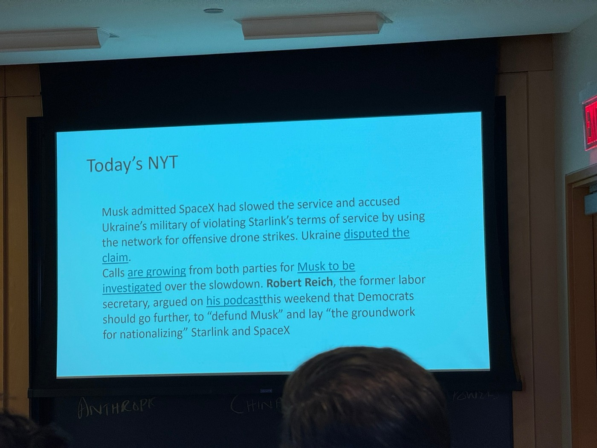
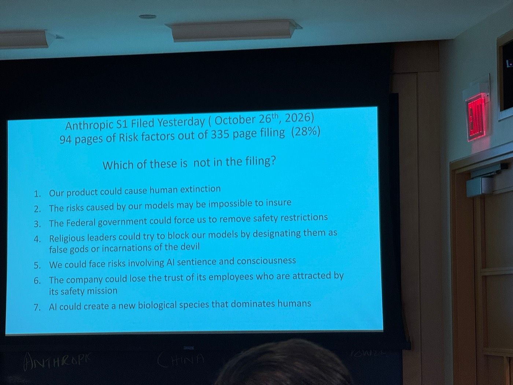
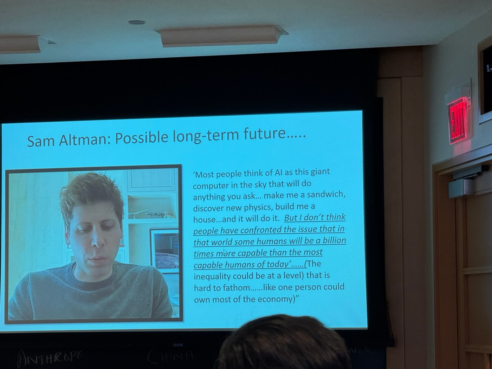
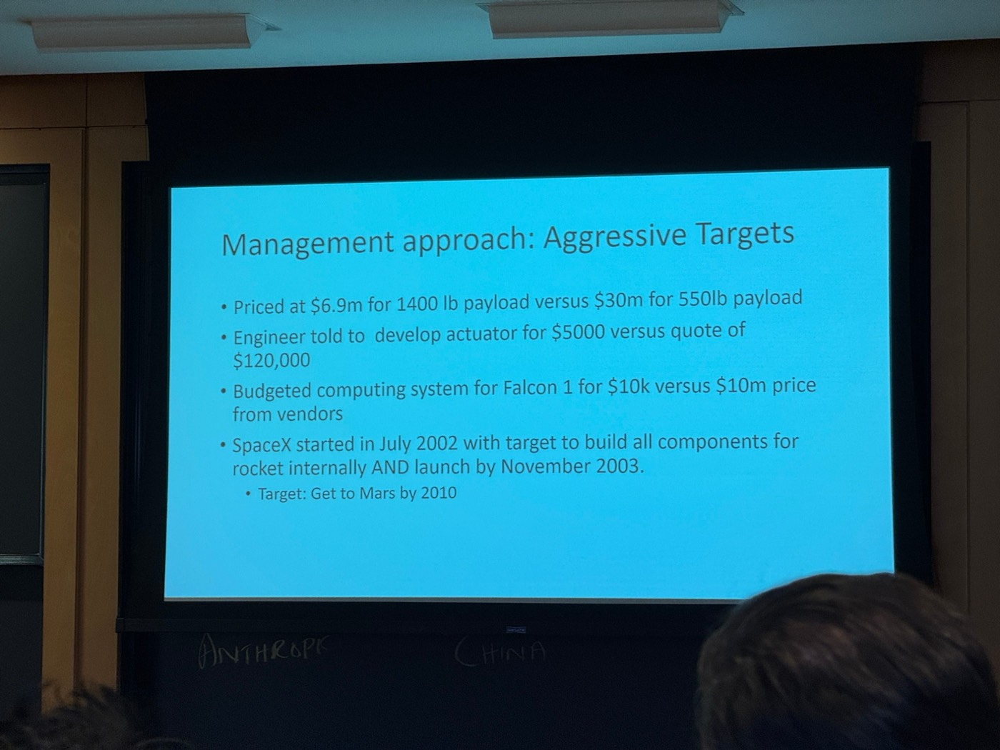
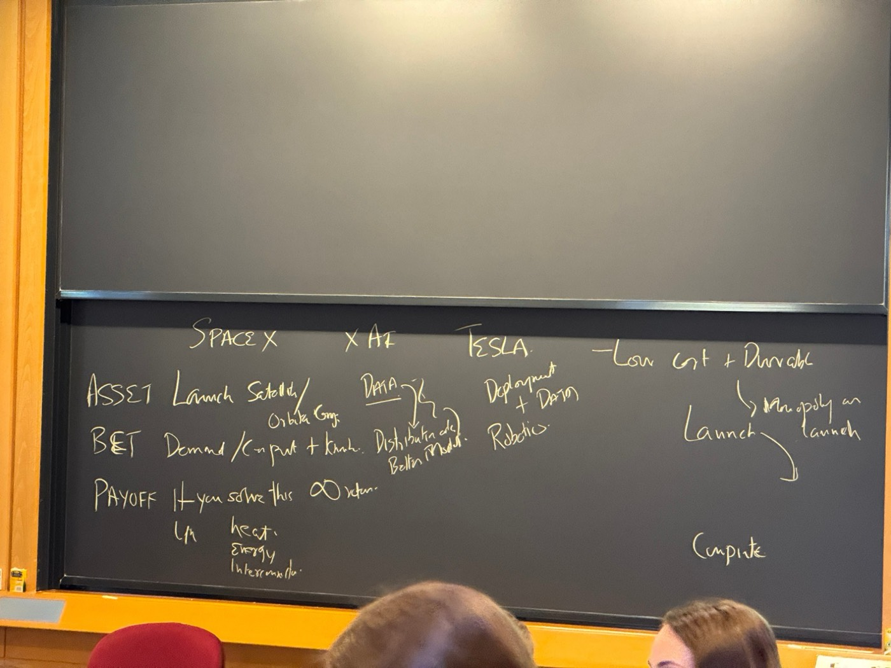

Oct 27: Elon Musk’s companies, concentration of power and geopolitical competition. Guest: Shaun Maguire (Sequoia). The text below organizes points raised in class without adding outside interpretation.
01 / CONTEXT
From decentralization to centralization
- Last class: blockchain as a way of decentralizing. But the world is moving much more towards the central.
- AI supply chain: ASML (Holland) → TSMC (Taiwan) → Nvidia → a handful of foundation model companies. One company, one company, one company.
- Behind each company you can point to an individual. The number of people driving this whole ecosystem can be counted on two hands.
- A very small number of people have unusual influence on the way the world gets shaped going forward. What does one do in that situation?
Today’s NYT: Starlink in Ukraine
- Over the last few weeks in Ukraine: Starlink service degraded → drones falling out of the sky, inability to defend themselves.
- Musk admitted SpaceX had slowed the service, accusing Ukraine’s military of violating Starlink’s terms of service by using it for offensive drone strikes. Ukraine said it is physically impossible for them to do that.
- Calls from both parties for Musk to be investigated; Robert Reich argued Democrats should “defund Musk” and lay the groundwork for nationalizing Starlink and SpaceX.
- Point: the level of power one person holds.

02 / S-1
Anthropic S-1 risk factors
- Anthropic S-1 filed October 26, 2026: 94 pages of risk factors out of a 335-page filing (28%).
- Quiz: which of the 7 listed risks is not in the filing?
- Answer: #4 (religious leaders designating models as false gods / incarnations of the devil) and #7 (AI creating a new biological species that dominates humans) are not in the document. All the others are.
- All of them are plausible in a broad sense. There’s no cost to putting risks in, but we’ve never seen an S-1 quite like this in terms of the scope of possible risks.

03 / APPROACH
Science at the limit
Video: Falcon 9 lands on drone ship
- SpaceX landed Falcon 9 on a floating drone ship at sea — second landing post-launch, first ocean landing (first landing on ground was in December).
- Push people to the limit, push science to the limit → achieve amazing things.
Sam Altman: possible long-term future
- AI as a “giant computer in the sky” that will do anything you ask.
- But in that world some humans will be a billion times more capable than the most capable humans of today; inequality at a level hard to fathom — one person could own most of the economy.
- An inequality we never had before; a world quite different from what we’ve had.

Management approach: aggressive targets
- Priced at $6.9M for 1,400 lb payload vs. $30M for 550 lb payload.
- Engineer told to develop an actuator for $5,000 vs. a quote of $120,000 — “why should this cost anything?”
- Computing system for Falcon 1 budgeted at $10K vs. $10M vendor price.
- SpaceX started July 2002 with a target to build all components internally AND launch by November 2003. Target: get to Mars by 2010.
- Ability to get engineers to make things that seem impossible.
- Not always successful: in 2008 he was about one day away from bankruptcy for both companies. Takes incredible risks, goes to the edge — and tolerates being there for months.

04 / BETS
Three companies: Asset / Bet / Payoff
SPACEXLaunch
Asset: launch satellites / orbital compute. Bet: demand for compute + launch. Payoff: if you solve this → ∞ return. Unknowns: heat, energy, interconnection.
XAIData
Asset: data (unique corpus from Twitter). Bet: distribution → better model.
TESLADeployment
Asset: deployment + data. Bet: robotics.

SpaceX
- Best businesses of all time = low-cost producers of something durable: low cost → higher volume → lower cost, a flywheel.
- SpaceX effectively has a monopoly on launch. Starship aims to drive $/kg to orbit down multiple orders of magnitude.
- With that monopoly, they can do things infeasible for other space companies: first Starlink, then the option of orbital compute at a dramatically lower total cost of ownership.
- Most effective at building data centers with lowest TCO and bringing them online quickly; said they could possibly bring online 20 GW next year.
- Skepticism: taking all the science risk; some areas where you don’t know the physics will work. Cheap satellites = making them almost an appliance; data centers in space must deal with cooling in vacuum, continuous energy — several unknowns (heat first).
- Musk also claimed civilizations on Mars — big risk and projection.
xAI
- Biggest advantage: a unique corpus of data (Twitter) that other LLM providers don’t have.
- Everyone else is buying data or scraping the internet — commodities anyone who can pay can get.
Tesla
- For: Waymo uses lidar, cameras, many sensors; Tesla trained on how human drivers see the road — more like how humans biologically evolved: just see and drive.
- Same analogy in robotics: they have data and deployment (robots deployed in their own factories) → data flywheel → stronger model.
- Bet: robotics is the next frontier. So far models do mental work; combine with physical work (Optimus) → unlimited.
- Against: many robotics companies (Boston Dynamics, Chinese companies). Like comparing Tesla to BYD — many would prefer BYD now. Would invest in robotics, maybe not Tesla.
- Response: in any single piece you can find a better company (e.g. Figure on models), but Tesla has all parts of the value chain — talent, data, model, deployment — giving stronger leverage. America attracts Chinese talent; unclear if the reverse happens.
- All of these reasons have significant uncertainties — some competitive, some physics. You have to make a bet.
05 / COMBINATION
Merging the ecosystem
- Question: if running xAI, merge with SpaceX or Tesla? Student: SpaceX.
- xAI has merged with SpaceX; committees on both boards are now looking at merging with Tesla. Given Elon gets what he wants in almost all of these, it’s very likely.
- Result: a ~$3.5 trillion market cap “monster.” What don’t they have?
What’s missing?
- Trust / hegemony / global power — even in this room support is ~50/50.
- Raw materials — must source from China, Congo or other nations; physical bottlenecks (e.g. cobalt).
- Public support. Musk has been so successful building an empire where he doesn’t need anyone — that is almost his biggest flaw.
- What the government has that Musk doesn’t: support of a large population.
- Historical comparison: the East India Company in the 18th century built its own army, bigger than the British army, and conquered large parts of India — “a Bible in one hand, a gun in the other, and financial concessions in both pockets.”
The scale of a trillion
- Spending $1 a second: a billion takes ~30 years; a trillion ~30,000 years — back to when humans had just come out of the Neanderthal era.
- Elon’s package is $1.7 trillion: spending $1M every day since the birth of Christ, he would still have over a trillion left.
- We have never seen numbers at this scale with one person or one entity controlling that much.
Would you short Anthropic?
- Anthropic is going after a ~$2 trillion IPO.
- Against the combination: very different companies and skills (social media, frontier model, space); one person doing all of that may make all of them worse. Cash from SpaceX / Tesla can fund xAI, but it’s screwing over the minority shareholders.
- For: whole vertical stack integrated; we assume compute becomes a commodity, and this is the company that makes it a commodity. Energy for compute is a bottleneck; SpaceX promises to solve it via data centers in space.
- Anthropic’s strategic advantage is positioning on trust — “you can trust us with your data” — building the infrastructure on which others want to build the future.
- Combining creates more power as capital and vertical integration, but not in winning over the majority. (Tesla panels falling off cars; SpaceX launches didn’t go well until they did.)
If you are China?
- How would China respond to this collection of companies? One view: decentralization — different players working on different things — as the way to innovate.
06 / POWER
Power, governance & sovereignty
- Assumption: this combination gives an unusual amount of power to one individual. Should a sovereign government allow that? Politicians are looking at whether things should be broken up.
- Show of hands: big Elon fans vs. skeptics — pretty polarizing. Regardless of whether we like him: how much power do you want to give somebody? As a society, how do you control that power?
Questions students would ask Musk
- Governance: when the combined entity makes decisions and board members disagree, what controls exist? Can the majority of shareholders veto? You don’t want it all in one individual; there should be a collective way.
- Value of utopia: a trillion dollars is far less than the quadrillions of value from a utopia these dreamers could create (stars, robotics, markets expanding). Why is everyone against capturing / creating utopia? What is the utopia you are trying to get to?
- National sovereignty: what is its role in the future? E.g. Próspera in Honduras — technocrats creating their own semi-autonomous cities — extremely dangerous. The US government’s only real power over these companies is regulation.
- Professor: asking a business “would you accept the sovereignty of countries?” is unusual — the obvious answer is yes — but it becomes relevant given the level of power. The real question is intent: “it’s utopia, so let him go” — who’s against utopia?
07 / GUEST
Shaun Maguire, Sequoia
Background
- Partner at Sequoia; early investor in SpaceX and xAI.
- Studied mathematics at USC; PhD at Caltech in quantum computing; started career in advanced defense research.
- Co-founded a cybersecurity company sold to Palo Alto Networks for almost $800M.
- Long-time champion / supporter of Elon and his companies.
Thought experiment: Xi Jinping vs. Elon Musk
- Hands: who has more power — Xi or Musk? Who do you trust more?
- Are America and China in a great power competition? Not necessarily a bad thing — at least a giant economic competition.
- Lived in China in 2009, worked at a Chinese startup. Chinese government has been very rational, pursuing strategies in its own interest.
- EV example: batteries are the hardest component to bootstrap. 20 years of R&D in Chinese labs (ATL); IP and subsidies passed to CATL, which became the dominant battery company and core infrastructure for China’s EV industry. Government secured rare earth deals worldwide and built refineries → supply chain from raw materials to batteries at much lower cost.
- Seen in EVs, now in pharma: it’s individual American companies competing against a very well-coordinated country.
- Reframe: whatever you think of Elon, how do you feel about a world where China wins every industry because they play a different game, and America’s economic and political power declines to almost nothing?
SpaceX vs. Tesla
- Personally thinks SpaceX is a vastly better company than Tesla. Tesla was probably better for some period early on, but SpaceX’s culture has been maintained longer.
- The ultimate superpower: the culture of Elon’s companies is different from any other company.
Inputs to the culture
- 1. Talent identification. Example: ~first 30 employees (2003), someone interviewing for a business role; Elon found they built race cars as a hobby, asked engineering questions, and pivoted the economics undergrad into mechanical engineering — now one of the most senior engineers at SpaceX. 20+ examples like that.
- 2. Pain tolerance. Works 16–18 hours a day, 7 days a week, no vacation, flying a dozen times a week — engineering stand-ups in Texas at 8 PM, then Colossus data center in Tennessee until 2 AM. Others (Google, Microsoft founders, Bezos) slow down after a decade or 15 years; Elon doesn’t. “I’ve won five marathons without training and I can’t keep up with him.”
- 3. More rope to young people. Constantly asks people to volunteer to lead projects regardless of background. Succeed → move up two levels instantly; fail → probably fired. Not punished for not volunteering or saying “I can’t do it.”
- Meritocracy + talent identification + leading from the front with extreme pain tolerance → a compounding culture with speed and intensity you otherwise only see in China (China maybe a little less intense than 10 years ago / 2009 gold rush).
Distance traveled
- First-generation founders raised with nothing build with unprecedented intensity — e.g. Jack Ma, an English teacher who grew up with nothing.
- Elon couldn’t have been Elon without growing up in South Africa amid extreme adversity.
- Sequoia lesson: look for founders with very high pain tolerance, very high grit, big distance traveled in life — the #1 correlate with building a generational company.
- Jensen Huang: Sequoia led Nvidia’s seed round in 1993 at ~$7M valuation; ~15 years of sheer grind when nobody cared.
- SpaceX culture lasted longer than Tesla’s partly because it went public later and the mission (building rockets) is so clear and unifying — the whole company watches launches together.
08 / Q&A
Q&A with Shaun
What happens to the empire after Elon?
- Best mental model: Apple. Steve Jobs and Elon have a lot in common (Sequoia led Apple’s Series A).
- Apple was lucky Steve passed after the iPhone and App Store were out; five years earlier, they probably wouldn’t have been built. It compounded for 20 years without huge innovations — like a rocket in orbit, drifting.
- If Steve had lived 20 more years: either something politically offensive hurt them, or Apple would be 10x bigger — leading-edge fabs, autonomous vehicles, maybe a rocket program.
- Same with SpaceX: projects past the threshold will work (Starship, orbital compute), but a Mars base might never happen. Every decade with Elon pushes an order of magnitude further up the tech tree.
Biggest risks?
- By far the biggest risk is political risk. Heavily regulating SpaceX → America loses space to China — “the greatest gift ever to China.”
- Real chance of some crazy nationalization of his businesses — would be a disaster.
- Humanity benefits when China has competition; American companies can’t compete against a whole country if hamstrung.
- AI is moving at breakneck pace — OpenAI’s math, physics and CS results last night: “the three biggest scientific results I’ve seen in my life, all in one day.”
- Genuinely worried about people getting / feeling left behind and the political upheaval from that. Feelings that you’re unlikely to live as well as your grandparents are legitimate; must address today’s concerns to be optimistic.
Terafab
- Sure Elon thought about building a fab 20 years ago.
- Levels: silicon wafers → wafers + solar panels (solar feature sizes ~100x bigger than leading-edge logic) → advanced logic / memory.
- Even only wafers + solar panels as input to orbital compute satellites gives SpaceX a lot of supply chain leverage.
- Odds SpaceX makes high-purity wafers and photovoltaics: ~99%. Advanced logic / memory: lower, but still quite high.
- Not all-or-nothing: a continuous ladder up the complexity stack; almost guaranteed SpaceX goes at least a few steps up.